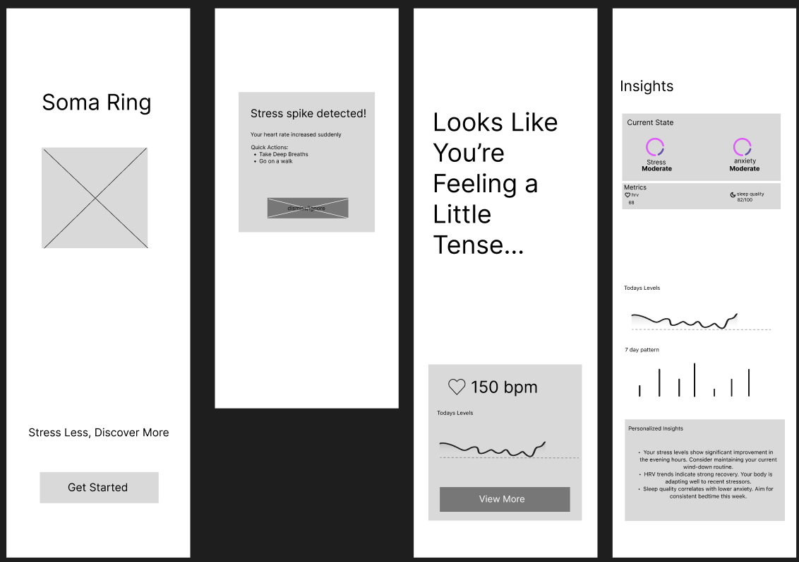
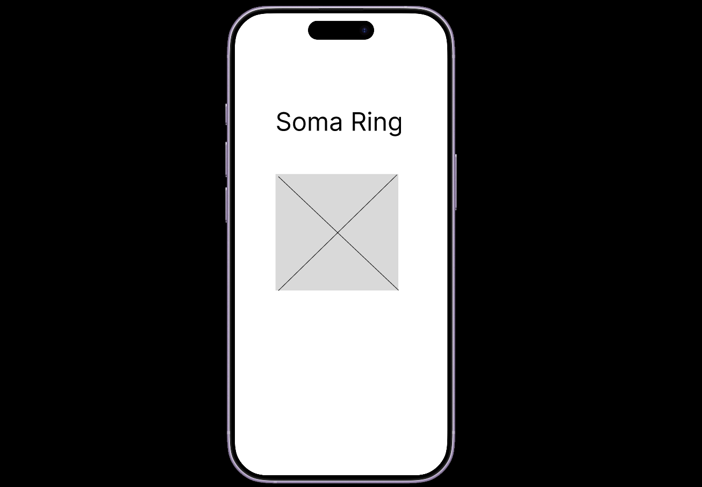
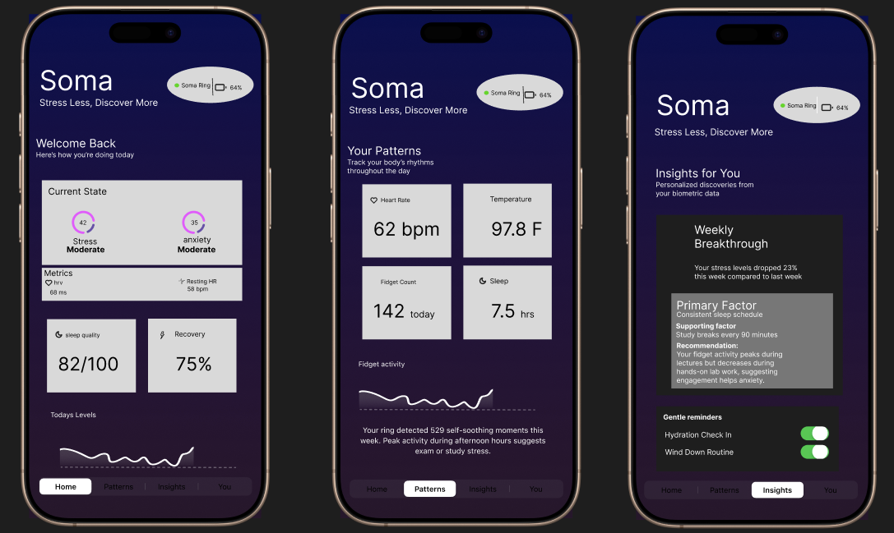
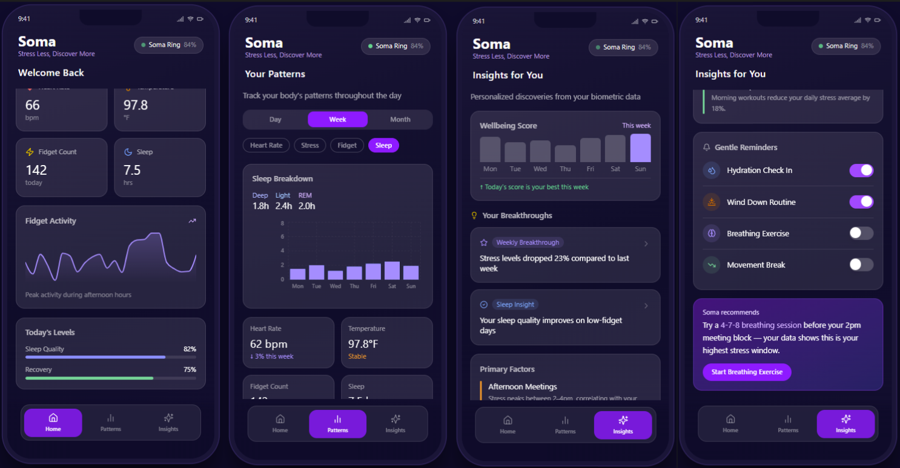

Background
College students experience stress constantly throughout their daily lives. Academic pressure, social expectations, financial concerns, lack of sleep, and the challenge of balancing responsibilities can all contribute to anxiety and emotional burnout. While stress has become a common part of college culture, many students struggle to understand how their habits, environments, and routines affect their mental well-being over time.
At the same time, existing wellness products often focus on only one side of the experience. Health-tracking wearables provide long-term biometric insights but offer little support during stressful moments. Stress-relief products such as fidget rings provide temporary comfort but do not help users build long-term self-awareness.
This created an opportunity to rethink how wearable technology could better support emotional wellness in a way that feels approachable, discreet, and integrated into everyday life.
Problem Statement
Current stress-management products typically focus on either long-term wellness tracking or immediate stress relief, but rarely both. College students need a solution that can help them manage anxiety during stressful moments while also helping them better understand the habits and patterns contributing to their stress over time. The challenge was designing a wearable product that combines real-time emotional support with meaningful wellness insights in a way that feels discreet, comfortable, and natural to use in everyday life.
User Persona
Jimothy is a first-year college student adjusting to the demands of college life. Between coursework, social pressure, late-night studying, and expectations from himself and others, he often feels overwhelmed throughout the day.
Although he experiences anxiety regularly, he struggles to understand what specifically causes his stress or how his routines contribute to it. In public settings like classrooms or libraries, he also wants a way to manage anxiety discreetly without drawing attention to himself.
Goals
- Reduce stress during overwhelming moments
- Better understand personal stress patterns
- Build healthier habits and routines
- Use tools that feel subtle and socially comfortable
Pain Points
- Difficulty identifying emotional triggers
- Existing wellness apps feel passive or disconnected
- Stress relief products lack long-term value
- Hesitant to use obvious mental health tools in public
Design Challenge
How might we help college students manage anxiety in the moment while also helping them better understand stress patterns over time?
Our challenge was designing a product that felt emotionally supportive without becoming distracting, clinical, or stigmatizing. The solution needed to fit naturally into everyday student life while balancing wellness tracking, interaction, and simplicity.
Option 1 — Health Tracking Ring
The first concept focused on creating a biometric wellness ring centered around long-term health tracking and data analysis, similar to products like the Oura Ring. The ring would monitor metrics such as heart rate, sleep quality, breathing patterns, and temperature changes to help users better understand their overall wellness and stress levels over time.
This direction offered strong potential for behavioral awareness and data-driven insights, allowing users to identify unhealthy routines and recurring stress patterns. However, during the design evaluation process, we realized the experience felt too passive and analytical. While users could review information after stressful moments occurred, the product itself did not actively support them during moments of anxiety. The concept lacked emotional interaction and immediate relief, which made the experience feel disconnected from the real-time challenges students face throughout the day.
Option 2 — Fidget Ring
The second concept focused on tactile interaction and stress relief through movement. Users could spin or interact with the ring during anxious moments as a discreet form of self-regulation.
While this concept provided immediate comfort and accessibility, it lacked deeper behavioral awareness. It solved short-term symptoms without helping users recognize long-term stress patterns or habits.
Final Direction
Rather than choosing between a health-tracking wearable and a stress-relief accessory, we decided to combine both concepts into a single hybrid experience. The final Soma Ring integrates tactile interaction with passive biometric tracking, allowing users to physically engage with the ring during stressful moments while also collecting wellness data over time. This approach created a more balanced and human-centered solution that supports both immediate emotional regulation and long-term behavioral awareness.
By combining these two experiences, the Soma Ring becomes more than just a wearable device or a fidget tool. It functions as an ongoing support system that helps users manage stress in the moment while also building a deeper understanding of their emotional habits and routines. This direction also helped differentiate the product from existing wellness wearables by creating a more interactive and emotionally supportive experience designed specifically around the needs of college students.
- Combines stress relief and wellness tracking into one wearable experience
- Provides immediate emotional support through tactile interaction
- Tracks biometric data including heart rate, sleep, breathing, and temperature
- Helps users identify long-term stress patterns and habits
- Designed to feel discreet and comfortable in public settings
- Encourages healthier routines through personalized app insights
- Blends emotional wellness support with everyday usability
- Creates a more interactive alternative to traditional health wearables
Low-Fidelity Prototype
Early low-fidelity wireframes exploring the Soma Ring mobile experience. These screens focused on defining the core user journey, including onboarding, real-time stress detection, calming interventions, and long-term wellness insights. The layouts were intentionally simplified to prioritize information hierarchy, emotional tone, and the relationship between immediate stress relief and behavioral awareness.


Mid-Fidelity Prototype

Mid-fidelity prototypes exploring the Soma Ring companion app experience. These screens focused on refining the visual hierarchy, wellness data presentation, and emotional tone of the interface while building a clearer connection between real-time stress tracking and long-term behavioral insights. The design direction emphasized a calming visual identity, simplified health metrics, and personalized wellness feedback tailored toward college students managing daily stress and anxiety.
Final High-Fidelity Prototype


From learning to implementation, GUIM provides a seamless experience where users can explore game UI concepts through structured tutorials and then directly apply that knowledge by discovering, evaluating, and downloading UI assets. The interface prioritizes clarity, intuitive navigation, and quick action, enabling developers to efficiently move from inspiration to real-world use.
Reflection
This project helped us better understand how emotional wellness products require more than just functional usability. Designing for anxiety meant balancing comfort, discretion, emotional support, and long-term behavioral awareness within a single experience. Throughout the process, we learned how important it is for wellness technology to feel approachable and naturally integrated into a user’s daily life rather than overly clinical or overwhelming.
If we had more time, one of the biggest next steps would have been developing a physical prototype of the Soma Ring itself. While the project focused heavily on the companion app and overall product experience, building a functional ring prototype would have allowed us to further explore the tactile interaction, ergonomics, materials, and physical user experience of the wearable. Testing how users naturally interact with the ring during stressful moments would have provided valuable insight into comfort, usability, and emotional effectiveness.
Future iterations could also explore features such as haptic feedback, AI-powered stress pattern analysis, and more personalized wellness recommendations. Overall, the project became an exploration of how wearable technology can move beyond passive tracking and become a more emotionally supportive and human-centered experience.